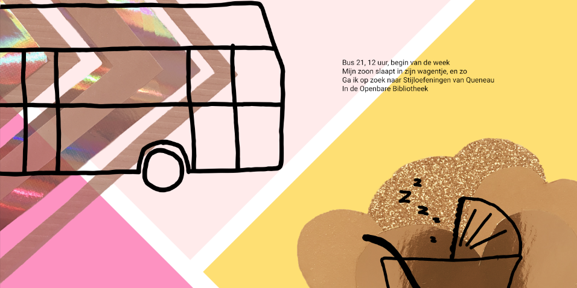
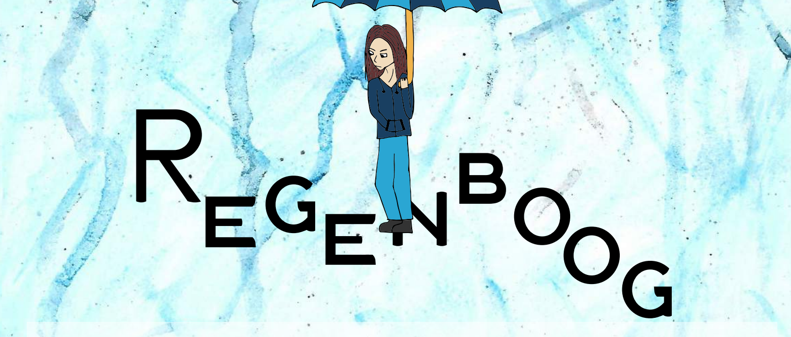
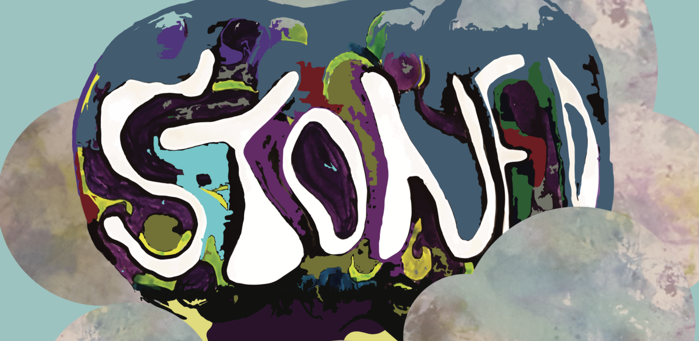
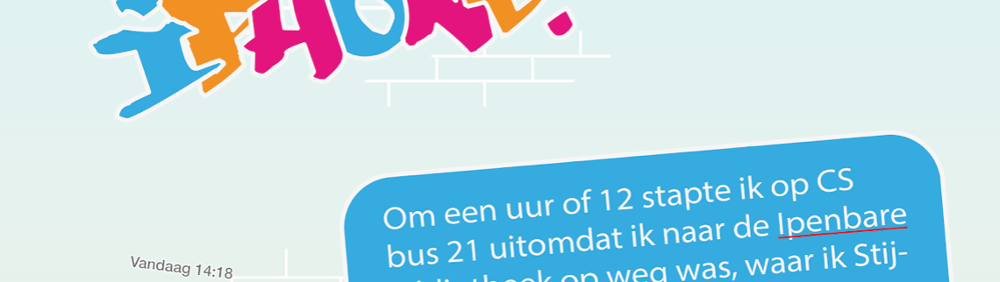
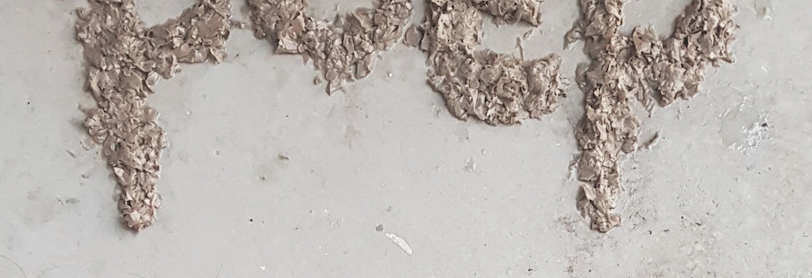

De 99 verhalen voor onderweg

Stijloefeningen (21) – Sonnet

Stijloefeningen (83) – De Cock en het raadsel van het verdwenen boek

Stijloefeningen (73) – Stoned

Stijloefeningen (18) – Enigszins aan de omslachtige kant

Stijloefeningen (39) – Poepen